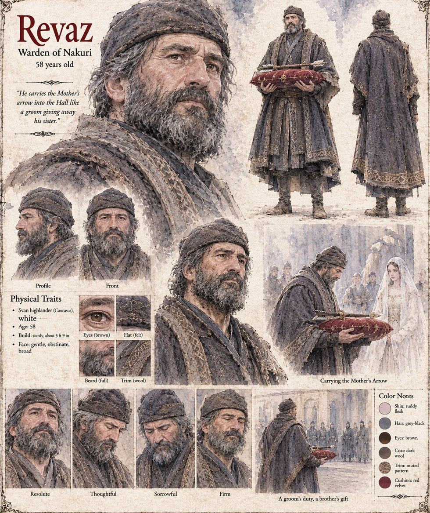

Revaz
Warden of Nakuri, valley of the pear orchards · bearer of the Mother’s arrow · 58 on his sheet
A gentle, obstinate, bearded man, Warden of Nakuri, a valley of the Mother whose pear orchards stand on high ledges. At the extraordinary session of the Council in the twenty-ninth year the Council, having voted to loose a Portion, is obliged to decide whose arrow to loose, and chooses, by the lot of the ancient jar, Nakuri’s, an arrow of the Mother’s, kept for twenty-nine years in a glass case in a valley of pear orchards. Revaz carries it into the Hall with the face of a bridegroom handing over his sister.
It is brought from Nakuri’s shrine on a cushion, and an apprentice of the Hall’s bow-tender, Rati, lifts the bow from its slab. The nine days of rain over the plain of Orvaneti are drawn from the sky of the Mother’s four valleys, Nakuri’s among them, and the Envoy’s note enters it so: precipitation deficit 71 percent, persisting through the following autumn. By the first of Ferren the springs of Tskhavar have failed and Nakuri’s pear-trees dropped their fruit green; the Vintage finds the Mother’s valleys with the dry, scoured, incredulous look of a household that has come home, and on the twenty-fifth of Iverin the Elara host marches down the Wine Road, seven thousand men of Bakviri, Mesvana, Tskhavar and Nakuri with the vintners’ ropes still looped over their shoulders. The manuscript does not follow Revaz himself past the carrying.
The manuscript gives his valley, his temper, his beard, the lot and the carrying. The sheet’s age of 58, sturdy build of about 5 ft 9 in, broad face, brown eyes, grey-black hair, full beard, felt hat and dark wool coat with a muted pattern trim are its own, as are its panels Resolute, Thoughtful, Sorrowful and Firm and its scenes Carrying the Mother’s Arrow and A groom’s duty, a brother’s gift, one of which sets a veiled bride in white behind him. The line it prints, He carries the Mother’s arrow into the Hall like a groom giving away his sister., is the sheet’s own paraphrase of the manuscript’s.
“with the face of a bridegroom handing over his sister”